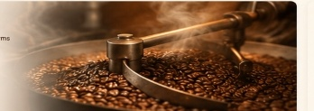

From High-Altitude Farms to Your Daily Cup.
At Brew & Bites, every single batch is roasted with uncompromised precision, celebrating the unique terroir, aroma, and complexity of ethically sourced Arabica beans.

Batch Roasting
Micro-Lot Convection Drum Roaster

From Bean to Brew
We partner directly with sustainable, shade-grown family farms situated in volcanic highlands 1,400 meters above sea level. This high altitude slows the bean development, producing denser cherries with complex sugar concentrations.
- check_circle 100% Hand-Selected Specialty Grade Arabica (Q-Grade 85+)
- check_circle Direct-Trade Partnerships Guaranteeing Fair Compensation
- check_circle Eco-Washed and Sun-Dried on Raised African Beds
How We Roast
Roasting is an art guided by science. In our roastery, we utilize convection hot-air drum roasters that evenly distribute thermal energy, avoiding scorching while caramelizing the natural bean oils.
12-Min Profile
Calibrated roast time curves to highlight chocolate & caramel notes.
Sensory Curves
Real-time probe monitoring to arrest development right at peak aroma.


How We Brew
Our signature cold brews are steeped in chilled, triple-filtered mountain water for a full 18 hours. This slow cold extraction draws out full-bodied chocolate and hazelnut undertones while stripping away 67% of unwanted acidity.
Made Fresh. Served Better.
Great coffee deserves extraordinary companions. Our croissants, loaded toasts, and decadent desserts are crafted fresh every morning using European butter and pure ingredients.
Fresh Viennoiserie
Hand-laminated French butter croissants baked fresh at dawn with flaky honeycomb structures.
Savory Snacks
Artisan sandwiches, whipped cream cheese bagels, and loaded rustic brioche toasts for every appetite.
Decadent Sweets
Fudgy dark chocolate brownies, glazed Saigon cinnamon rolls, and sea-salt choco-chunk cookies.